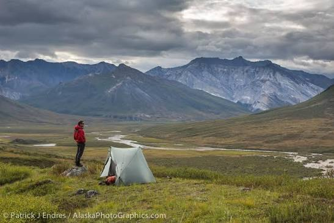

Harrastukset tuovat arkeen iloa, uusia kokemuksia ja mahdollisuuksia oppia jotain uutta. Tältä sivulta löydät ideoita erilaisiin vapaa-ajan tekemisiin.
Tutustu esimerkiksi näihin:
Kokeile jotain uutta! Valitse viikon ajaksi harrastus, jota et ole ennen kokeillut. Se voi olla esimerkiksi uusi liikuntalaji, resepti, käsityö tai valokuvaushaaste.
Alla oleva kuva esittelee yhden mahdollisen harrastuksen. Kokeile tehdä kuvasta klikattava linkki.
